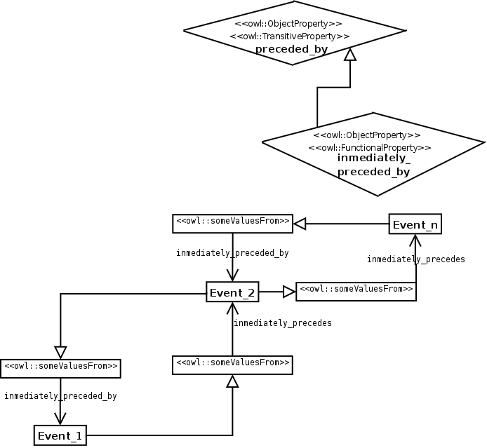
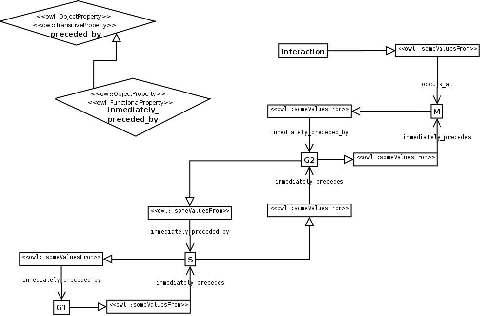

NAME: Sequence.
CLASSIFICATION: Domain Modelling.
MOTIVATION: In biological knowledge there are events that happen one after the other in a single related sequence, such as the cell cycle. Sometimes the only important thing is what happens after or before a concrete event, without the concrete order of all the events (in that case we would need the List ODP, for example to compare different sequences of events).
AIM: To model a sequence of events, one after the other.
STRUCTURE:
SAMPLE:
ELEMENTS: The elements of this ODP are the classes that make up the sequence (in this case the phases of the cell cycle, thus G1, S, G2, M) and the four properties Precedes (transitive), ImmediatelyPrecedes (subproperty of Precedes, functional) PrecededBy (transitive) and ImmediatelyPrecededBy (subproperty of PrecededBy, functional).
IMPLEMENTATION: The sequence is created by adding restrictions in the properties ImmediatelyPrecededBy and ImmediatelyPrecedes for each phase, except in the last one (only ImmediatelyPrecededBy) and the first one (only ImediatelyPrecedes).
RESULT: The sequence of events is codified creating an structure that can be queried with queries such as [OccursAt some (PrecededBy some S)], if we want anything that happens after S, or [OccursAt some (ImmediatelyPrecededBy some S)], if we want to know what happens right after S but not later (thus not G2 or M).
RELATED ODPS: List ODP, AdaptedSEP ODP.
ADDITIONAL INFORMATION: in theory only ImmediatelyPrecedes relationships should be asserted and the reasoner should infer the inverse relationship, but it does not work for the superproperty of the inverse. Also, for the inverse to work properly some kind of closure (onlysome) or defined classes are needed.
REFERENCES:
URL: http://odps.sourceforge.net/odp/owl/Domain_Modelling_ODP/Sequence.owl